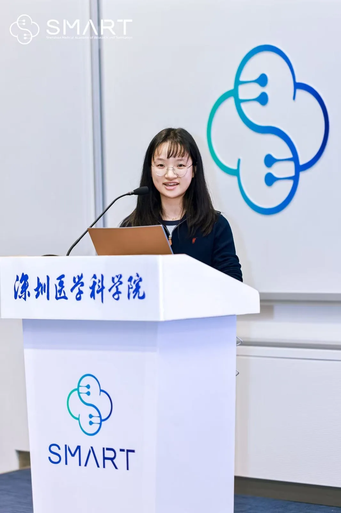
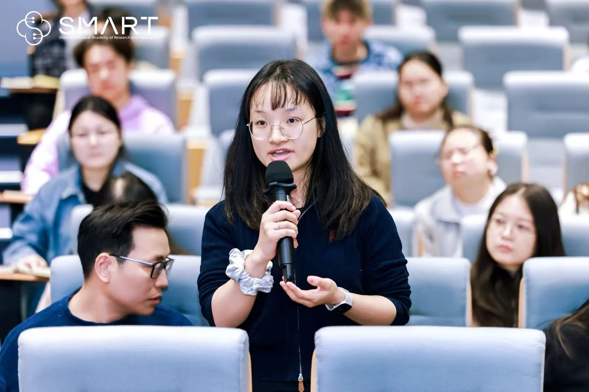

Skip to content
LU LAB
Research
⌄
Novel GABAᴀ receptor auxiliary subunits and molecular targets: functional characterization and drug development
Functions and mechanisms of understudied GABAᴀ receptor subunits
Immune regulation of synaptic and neuronal function
Neural circuit mechanisms of GABAᴀ receptor psychopharmacology
Systems mechanisms underlying fundamental brain functions
Members
⌄
Wei Lu
Members
Media
Publications
Gallery
⌄
Laboratory & Equipment
Life in the Lab
Join
Contact
中文
/
EN
Life in the Lab
Laboratory & Equipment
→
Life in the Lab
→
2026.01.10
INC Annual Retrat 2025
Lab group photo
Professor Wei Lu attending a presentation

Presentation by Dr. Mengxun Luo
Presentation by Dr. Hongjiang Yang

Dr. Mengxun Luo asking a question
 Lab group photo
Lab group photo Professor Wei Lu attending a presentation
Professor Wei Lu attending a presentation Presentation by Dr. Hongjiang Yang
Presentation by Dr. Hongjiang Yang